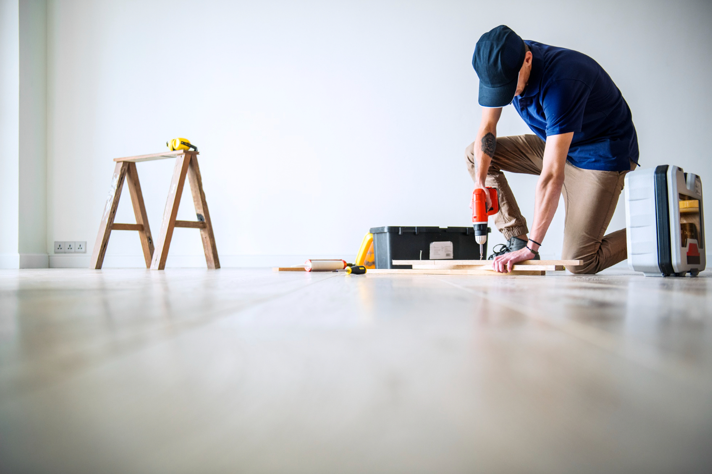

PerfectBudLviv
Комплексний ремонт приміщень у м.Львів
 PerfectBudLviv - це мережа професіоналів з ремонту, які вирішують усі складнощі пов'язані з ремонтом квартир, особняків тощо, і дозволять вам мати дім, про який ви завжди мріяли, швидше та без стресу.
Нашою метою є виконати якісний ремонт за вашими побажаннями і здати в терміни. усунути будь яку невизначеність, запропонувавши вам правильне рішення та здати вашу нову квартиру саме так, як було обіцяно і вчасно.
Ваші переваги від співпраці з PerfectBudLviv:
Виконання демонтажних робіт та вивіз будівельного сміття. Весь процес ремонту приміщення безпосередньо починається з демонтажу перегородок та перепланування. Якщо це вторинний ринок нерухомості то ми знімаємо всю стару основу, таку як шпалери, паркет або ламінат, плитку та різні перегородки, щоб підготувати поверхню для нового покриття. Цей етап є надзвичайно важливим, оскільки правильно виконані демонтажні роботи забезпечують якісну основу для подальшого ремонту. Інакше, без належної підготовки, всі наступні етапи можуть не мати бажаного результату.
Перед монтажем міжкімнатних перегородок ми робимо розмітку для того, щоб геометрія кімнат та всі кути були максимально рівними, що в подальшому зекономить вам гроші на вирівнюванні стін. Ми здійснюємо монтаж перегородок з різних матеріалів, таких як цегла, піноблоки, гіпсокартон та інші. Кожен матеріал має свої переваги та недоліки, але ми завжди враховуємо умови і вимоги клієнта, щоб забезпечити оптимальний результат. При зведені стін ми залишаємо невеликий зазор між стіною та стелею, що є необхідним для компенсації можливої усадки будівлі.
Етап штукатурних робіт та вирівнювання стін є важливою складовою частиною комплексного ремонту квартири або будинку під ключ. Цей етап передбачає вирівнювання поверхонь, створення рівної та надійної основи для подальшого оброблення та фінішного оздоблення стін та стель. Нижче описані основні кроки цього етапу.
Для того щоб якісно виконати роботи по влаштуванню інженерних мереж потрібно розробити проєкт. Так ви чітко розумітимете де будуть розташовані усі електротехнічні прилади та відчути, наскільки зручно буде користуватись усім у новій оселі.
Електрика: на цьому етапі виконується прокладання електричних проводів від електрощитової до кожної розетки, вимикача або освітлювального приладу. Чистовий монтаж розеток, вимикачів та світильників здійснюємо після завершення малярних робіт.
Сантехніка: на цьому етапі прокладаються трубопроводи для гарячої та холодної води до кожного сантехнічного приладу. З'єднання труб здійснюється за допомогою фітингів, а з'єднання з сантехнічними приладами - за допомогою запірних клапанів та кріпильних елементів.
Опалення: на цьому етапі виконуємо розведення труб до опалювальних приладів, такі як радіатори, конвектори або підлогове опалення. Перед заливанням стяжки ми перевіряємо всю систему на можливість протікання і тільки після цього можна заливати стяжку.
Вентиляція та кондиціонування: на цьому етапі прокладаємо траси кондиціонування та системи вентиляції, які забезпечують свіже повітря та відведення витяжного повітря з приміщень. Встановлюються вентиляційні канали, вентилятори, решітки і фільтри. Залежно від потреб та типу будівлі можуть використовуватися різні системи вентиляції, включаючи приточну, витяжну або рекупераційну вентиляцію.
Підготовка поверхні: перед початком укладання плитки ми підготовлюємо поверхню, грунтуємо та робимо гідроізоляцію.
Планування та розкладка: Перед укладанням плитки робимо план розкладки, визначаємо напрямок укладання (Якщо ви розробляли дизайн проєкт то цей етап повинен у вас бути). Правильна розкладка плитки може зекономити вам до 10% плитки на відході.
Укладання плитки: за допомогою зубчастого шпателя клейовий розчин наносимо на поверхню та промазуємо плитку для того, щоб в процесі експлуатація плитка не відпала від стіни. Вирівнювання плитки на стінах та підлозі відбувається за допомогою СВП систем вирівнювання плитки. Важливо дотримуватися правильної товщини шару клею, щоб забезпечити міцне зчеплення плитки з поверхнею.
Обрізка та монтаж плиток: під час укладання плиток може знадобитися їх обрізка та запилювання під 45 градусів для досягнення необхідних розмірів та формування зовнішніх кутів. Для цього використовуємо плиткорізи та болгарки зі спеціальними дисками. Після обрізки плитки торці шліфуємо та досягаємо заводського торця. Ми маємо інструменти які дають нам можливість різати плитку будь якого формату.
Затирка швів: після того, як клейовий розчин затвердіє, проводимо затирку швів між плитками за допомогою фуги. Рекомендуємо нашим клієнтам використовувати епоксидну затирку, щоб шви не темніли та не проявлялась плісінь. Усі внутрішні кути ми силіконимо санітарним герметиком в колір фуги. Після затирки швів, витираємо вологою губкою плитку для видалення залишків розчину з поверхні плитки.
Переважно, після висихання та усадки стяжки, виконуються роботи зі створення конструкцій з гіпсокартону. Зазвичай для облицювання стін та стель використовуємо гіпсокартон товщиною 12,5 мм, в зонах з підвищеною вологістю обов'язково вологостійкий гіпсокартон. Також рекомендуємо для кращої звукоізоляції кімнати, заповнити простір між плитою перекриття та гіпсокартонною конструкцією мінватою. Ми використовуємо профіль 0,6 мм для міцності та надійності конструкцій.
Малярні роботи включають в себе цілий комплекс робіт з обробки приміщень. Так, малярні роботи передбачають грунтування поверхонь, шпаклювання, поклейку склополотна або сітки, шліфування, обробку швів між листами гіпсокартону, а також фарбування стін, поклейку шпалер. Для шліфування поверхонь ми використовуємо шліфмашини (в народі називають "жираф") та малярні лампи, які просвітлюють стіну та показують на скільки якісно зроблена робота. Користуючись професійним інструментом та автоматизовуючи процеси ми досягаємо високого рівня ремонту квартир.
Етап чистового оздоблення є завершальним етапом ремонту квартири або будинку. Завершувати ремонт краще укладанням підлогових покриттів, коли всі інші оздоблювальні роботи виконані. Це ж стосується і дверей, а також сходів, які передбачені проектом для встановлення. Після вкладання підлогового покриття ми накриваємо його картоном. Також монтуємо розетки, вимикачі та чистову сантехніку.
Пропонуємо Вам ознайомитися з нашими цінами на послуги. У прайс-листі розписані усі наші послуги та актуальні ціни на них. Якщо у Вас залишилися питання — Ви можете зв‘язатися з нами по вказаним контактам у відповідному розділі.
| Найменування робіт | Одиниця вимірювання | Ціна, грн |
|---|---|---|
Демонтажні роботи |
||
| Демонтаж плитки | м² | 80 |
| Демонтаж штукатурки | м² | 90 |
| Демонтаж перегородки з газоблоку | м² | 150 |
| Демонтаж перегородки з цегли | м² | від 150 |
| Демонтаж перегородки з ГКЛ | м² | 75 |
| Здирання старої фарби | м² | 60 |
| Демонтаж розеток/вимикачів | од. | 35 |
| Зняття шпалер | м² | 60 |
| Демонтаж цементної стяжки до 6см | м² | 110 |
| Демонтаж плінтуса | м/п | 25 |
| Демонтаж радіаторів опалення | од. | 200 |
| Демонтаж умивальника/унітазу/біде | од. | 300 |
| Демонтаж ламінату | м² | 50 |
| Демонтаж паркету/дощаної підлоги | м² | 80 |
Оздоблювальні роботи |
||
| Заливання стяжки до 6 см | м² | 160 |
| Цегляна кладка стін | м² | 290 |
| Цегляна кладка стін | м/п | 190 |
| Мурування перегородки з газоблоку | м² | 190 |
| Мурування перегородки з газоблоку | м/п | 120 |
| Монтаж перегородки з ГКЛ | м² | 235 |
| Монтаж ГКЛ на клей | м² | 150 |
| Монтаж ніші з ГКЛ | м² | 150 |
| Монтаж стелі з ГКЛ | м² | 230 |
| Армування стін/стелі сіткою | м² | 70 |
| Армування стін/стелі сіткою | м/п | 60 |
| Армування стін скловолокном | м² | 75 |
| Грунтування стін/стелі | м² | <20 |
| Грунтування стін/стелі | м/п | 20 |
| Грунтування стін/стелі бетоноконтактом | м² | 30 |
| Штукатурення стін піщаною штукатуркою | м² | 175 |
| Штукатурення стін гіпсовою штукатуркою | м² | 160 |
| Штукатурення стелі | м² | 200 |
| Штукатурення відкосів | м/п | 160 |
| Закладання кутника малярного | м/п | 50 |
| Закладання кутника привіконного | м/п | 60 |
| Вирівнювання стін | м² | 110 |
| Шпаклювання стін | м² | 160 |
| Шпаклювання стелі | м² | 180 |
| Шпаклювання відкосів | м/п | 150 |
| Перетирання стін | м² | 45 |
| Фарбування стін/стелі | м² | 75 |
| Фарбування відкосів | м/п | 75 |
| Нанесення декоративної штукатурки | м² | від 200 |
| Наклеювання шпалер | м² | від 110 |
| Наклеювання фотошпалер | м² | 150 |
| Облицювання стін/підлоги плиткою | м² | 400 |
| Облицювання фартуха плиткою | м/п | 380 |
| Вирізання отворів у плитці | од. | 110 |
| Зарізання плитки під кут 45° | м/п | 140 |
| Затирання швів двохкомпонентною затиркою | м/п | 120 |
| Зашивання інсталяційного блоку | од. | 800 |
| Обмуровування ванни | од. | 900 |
| Утеплення підлоги пінопластом | м² | 80 |
| Влаштування гідроізоляції | м² | 60 |
| Укладання паркетної дошки на підложку | м² | 170 |
| Монтаж водяної теплої підлоги | м² | 200 |
| Монтаж електричної теплої підлоги | м² | 190 |
| Укладання ламінату | м² | 150 |
| Укладання вінілу | м² | 150 |
| Монтаж плінтуса МДФ | м/п | 90 |
| Монтаж плінтуса пластикового | м/п | 50 |
Електромонтажні роботи |
||
| Влаштування ніші під електрощиток | од. | 500 |
| Монтаж електрощитка | од. | 550 |
| Влаштування штраб під електрику | м/п | 45 |
| Зароблення штраб | м/п | 40 |
| Монтаж автоматичних вимикачів | од. | 180 |
| Розведення електричної мережі | т. | 140 |
| Розведення TV, Internet | т. | 200 |
| Монтаж підрозетників | од. | 50 |
| Монтаж розеток/вимикачів | т. | 60 |
| Монтаж вмонтованих світильників | од. | 150 |
| Монтаж точкових світильників | од. | 130 |
| Монтаж трекових світильників | м/п | 150 |
| Монтаж люстри без збирання | од. | 200 |
| Монтаж бра | од. | 100 |
Сантехнічні роботи |
||
| Влаштування штраб сантехнічних | м/п | 95 |
| Зароблення штраб сантехнічних | м/п | 70 |
| Вивід водопостачання | т. | 750 |
| Виведення каналізаційних труб | т. | 300 |
| Приєднання до існуючої системи каналізаціїї | т. | 600 |
| Монтаж та підключення радіаторів | од. | 550 |
| Підключення котла | од. | 1500 |
| Влаштування ніші з ящиком для гребінок | од. | 450 |
| Монтаж гребінки | од. | 1400 |
| Монтаж та підключення душової кабіни | од. | 1500 |
| Монтаж умивальника | од. | 500 |
| Монтаж змішувача | од. | 350 |
| Влаштування вбудованого змішувача(гігієнічнй душ) | од. | 1000 |
| Монтаж унітазу/біде | од. | 500 |
| Монтаж інсталяції унітазу/біде | од. | 900 |
| Монтаж ванни | од. | 800 |
Додаткові роботи |
||
| Винесення будматеріалу сходами | поверх | 5 |
| Винесення будматеріалу ліфтом | мішок | 8 |
| Закупка та доставка будматеріалів | т. | 900 |
| Вивіз та утилізація сміття | до 1.5т | 1200 |